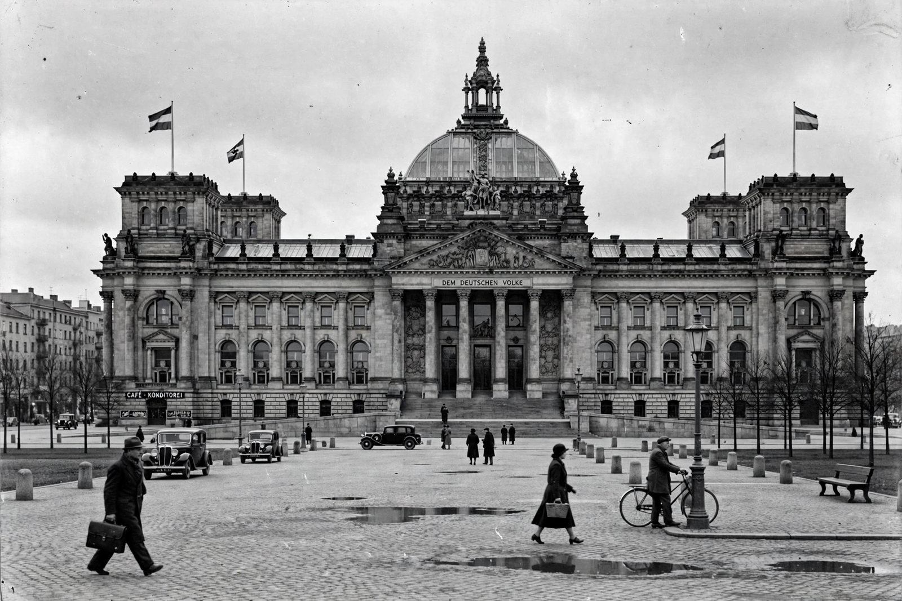

| Period | 30 January 1933 – 8 May 1945 |
|---|---|
| Capital | Berlin |
| Head of state | Paul von Hindenburg (1933–34); Adolf Hitler, as Führer (1934–45) |
| Governing party | National Socialist German Workers' Party (NSDAP) |
| Preceded by | Weimar Republic |
| Succeeded by | Allied-occupied Germany |

Nazi Germany is the common English name for Germany between 1933 and 1945, when Adolf Hitler and the Nazi Party controlled the country through a totalitarian dictatorship. The regime transformed Germany from the democratic Weimar Republic into a one-party police state founded on the ideology of Nazism — a combination of extreme nationalism, racial antisemitism, anti-communism and the cult of the Führer (leader).
Hitler was appointed Chancellor on 30 January 1933. Exploiting the Reichstag fire of February 1933, the regime suspended civil liberties, arrested opponents and, through the Enabling Act, ruled by decree. After President Hindenburg's death in August 1934, Hitler merged the offices of president and chancellor and demanded a personal oath from the armed forces. Political parties, trade unions and independent institutions were abolished or "co-ordinated" (Gleichschaltung).
The 1935 Nuremberg Laws stripped Jews of citizenship; persecution escalated through the Kristallnacht pogrom of November 1938 to the "Final Solution": the systematic murder of approximately six million Jews in ghettos, mass shootings and extermination camps such as Auschwitz. Roma, people with disabilities, Poles and Slavs, homosexuals, Jehovah's Witnesses and political dissidents were also persecuted and murdered in large numbers.
Rearmament repudiated the Treaty of Versailles that had ended the First World War. Germany remilitarised the Rhineland (1936), annexed Austria (1938) and dismantled Czechoslovakia (1938–39). The invasion of Poland on 1 September 1939 began the Second World War in Europe. Germany rapidly conquered much of Europe but was turned back by the Soviet Union after 1941 and by the Western Allies after the Normandy landings of June 1944. Hitler died by suicide on 30 April 1945; Germany surrendered unconditionally on 8 May 1945.
The country was divided into four occupation zones, then into West and East Germany. Nazi leaders were prosecuted at the Nuremberg trials, and Germany undertook a long process of denazification and, later, public remembrance (Vergangenheitsbewältigung).